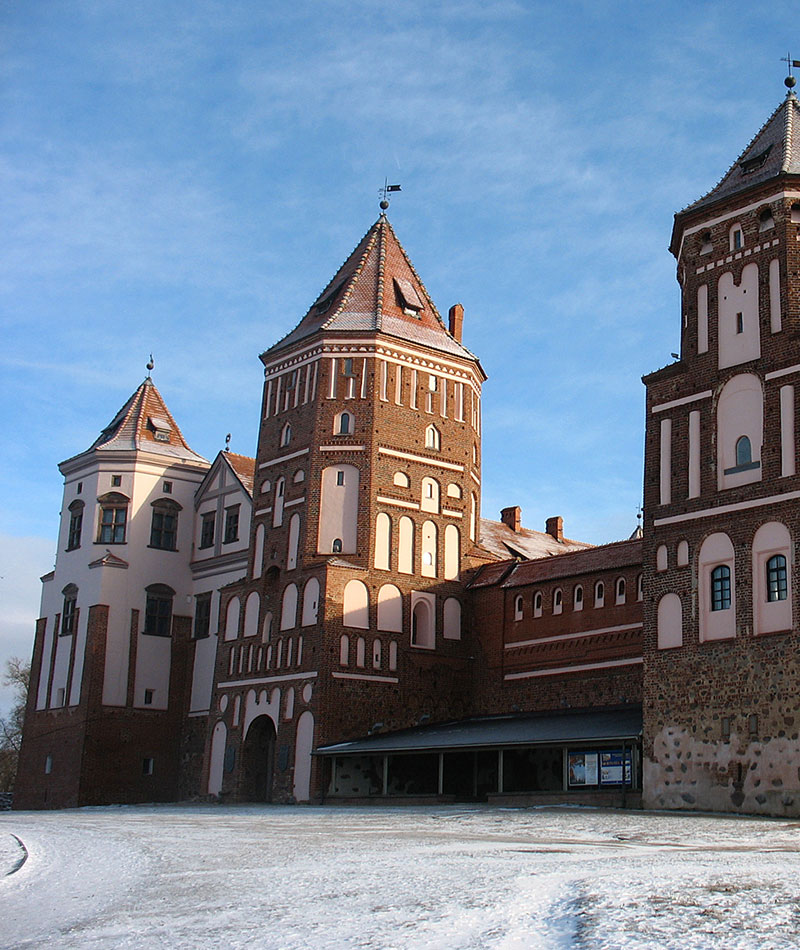

Многовековая история белорусской земли и самобытная культура ее народа отражена в многочисленных памятниках истории и культуры (более 17,5 тысячи объектов), из которых более 5 тысяч вошли в Государственный реестр историко-культурных ценностей и активно включаются в объекты экскурсионного показа.

Культурно-познавательный туризм
Одной из самых известных достопримечательностей по праву считается Мирский замок, который включен в Список всемирного наследия ЮНЕСКО. Этот выдающийся пример оборонного зодчества XVI века, одновременно сочетает в себе черты готики, барокко и ренессанса.
Несвижский дворцово-парковый комплекс – жемчужина белорусской архитектуры, также внесен ЮНЕСКО в Список всемирного наследия. Владельцы замка, самыми известными из которых были Радзивиллы, несколько раз перестраивали его, в связи с чем замок несет в себе черты многих архитектурных стилей.
В Список всемирного культурного и природного наследия ЮНЕСКО входят также уникальный природно-культурный комплекс Беловежской пущи и геодезические пункты градусных измерений Дуги Струве, по которым можно совершить тематические путешествия.
На территории Беларуси расположено значительное количество древних городов – Полоцк, Новогрудок, Туров, Гродно, Несвиж, Заславль и другие, являющиеся наиболее посещаемыми туристическими объектами.
В стране насчитываются сотни музейных экспозиций, галерей и выставочных залов. В них хранится более 2,8 миллиона экспонатов – уникальных памятников национальной и мировой культуры. Крупнейшими среди них являются Национальный художественный музей, Национальный музей истории и культуры Беларуси, Белорусский государственный музей истории Великой Отечественной войны и др.